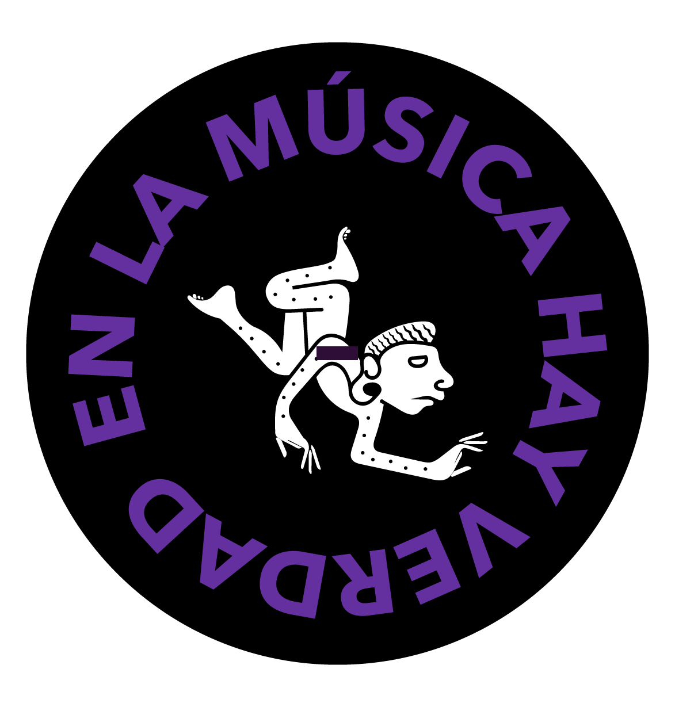

En La Música Hay Verdad
Lineamientos generales del proyecto
“En la música, hay verdad”, sonido y legado de las ciudadanías. Esta es una oportunidad para que los y las
artistas emergentes de Antioquia, Córdoba y Chocó traigan todo su talento y su expresión para la creación de una
serie musical que busca develar las memorias colectivas de nuestros territorios a través de un disco con 6
canciones en diferentes géneros musicales que se aproximen al legado de la Comisión de la Verdad.
Músicos solistas, cantautores o grupos colombianos de diversos géneros como: Pop, reggae, rock, rock
alternativo, música de autor, boleros, pop alternativo, cumbia, cumbia llanera, música del pacífico, música
urbana y sus nuevas expresiones, rap, salsa, son, R&B, soul, funk, dancehall, reggaetón, entre otras, que tengan
al menos 30 minutos de su propia música.
¿Quiénes pueden participar?
-
Personas naturales habitantes de los departamentos de Antioquia, Chocó y Córdoba.
-
Grupos constituidos: como mínimo el setenta por ciento (70%) de los integrantes deben ser de nacionalidad
colombiana y habitantes de los departamentos de Antioquia, Chocó y Córdoba.
¿Quiénes no pueden participar?
-
Ciudadanos colombianos o extranjeros menores de dieciocho (18) años.
-
Aquellas personas que tengan proceso en curso por la Comisión de Delitos Sexuales cometidos contra menores de
18 años de conformidad con lo establecido en la Ley 1918 de 2018.
- Personas jurídicas de cualquier naturaleza
Notas
-
Cada participante; solista o agrupación, podrá presentar únicamente
una (1) propuesta.
-
Cada participante deberá presentarse de manera directa. No se
admitirán las propuestas presentadas por managers o representantes.
-
No es necesario haber lanzado música en alguna plataforma digital
como Spotify, YouTube, Deezer, Amazon y similares. Puede presentar
su postulación mediante links de videos cargados a YouTube o
cualquier link de libre acceso al material.
-
Tener como máximo dos trabajos discográficos sin importar el tiempo
de duración.
-
En caso de que tenga música en plataformas digitales, el límite
superior para participar es de 5000 oyentes mensuales en plataformas de streaming.
-
Cuando no se aporten los documentos técnicos indispensables para la
evaluación de las propuestas.
-
Cuando los enlaces o la información suministrada para la
visualización de la propuesta no funcionen adecuadamente, tengan
claves o contraseñas para acceder a ellos, la propuesta será
rechazada.
-
Cuando la propuesta sea presentada por un niño, niña o adolescente
(menor de edad).
-
Cuando el tipo de participante no corresponda con el perfil
requerido en el estímulo en el cual pretende participar.
-
Cuando el participante no acredite residencia en departamentos de Antioquia, Chocó y Córdoba y en caso de ser
agrupación constituida, no acredite residencia en departamentos de Antioquia, Chocó y Córdoba de al menos el
60% de sus integrantes, tal como se especifica en el presente documento.
Deberán enviar la información solicitada en link hacia “nubes
compartidas”, y se aceptan videos autogestionados, audios caseros,
videos explicativos, maquetas - o cualquier material que el participante
o la agrupación pueda compartir, para que el equipo de curaduría de
Falso Ídolo logre identificar la composición de la materia prima como
armonías, melodías, arreglos, visión estético-sonora y visual, visión de
producción, destreza, calidad interpretativa, alcance y posibilidades de
mercado en la industria, entre otras.
*De ninguna manera se podrán enviar archivos de descarga. Todo el
material de audio, visual, PDF o cualquier archivo debe estar almacenado
en una nube o en una plataforma gratuita. En caso de que un participante
quiera enviar información extra, tendremos unas preguntas que pueden
complementar la información entregada en enlaces de video y audio, como:
- ¿Qué sonidos o artistas son sus referentes sonoros?
- ¿Qué trabajos visuales o de qué autor lo inspiran?
- ¿Qué trayectoria tiene y en qué campo de la música?
- ¿Ha realizado presentaciones en vivo con este proyecto?
-
¿Ha sido auspiciado por alguna empresa privada para este oficio?
-
¿Ha sido ganador de becas, estímulos, reconocimientos o algún otro
beneficio público en su proyecto?
Calidad creativa: 25%
Visión artística: 25%
Calidad interpretativa: 25%
Visión industrial: 25%

Derechos y Deberes del ganador

2
-
Definir de manera clara y concisa con el equipo de Falso Ídolo el porcentaje justo de autoría y composición de
las obras.
-
Cumplir con las fechas y cronogramas que se establezcan con el equipo de trabajo de Falso Ídolo.
-
Disposición e iniciativa para componer, crear, enviar y compartir sesiones de creación, maquetas y demás
material vía digital.
Notas
-
Falso Ídolo no se compromete con la efectiva afiliación a las sociedades de gestión colectiva, sólo entregará
conocimientos básicos y proveerá sus aliados en estas entidades para que puedan tener un acompañamiento
detallado en cada uno de los procesos con los propios funcionarios.
-
El registro sonoro de las presentaciones será liderado en la parte técnica por Daniel Marín, músico y maestro
en Record production de la University of West London, director del semillero ‘Tecnigrau’ del ITM de Medellín.
Daniel es quien tiene la última palabra en las tomas de decisiones de mezcla y máster.
Cualquier duda o comentario, escríbenos en @falsoidolo en IG y al correo operaciones@falsoidolo.com